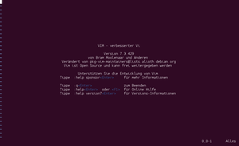

VIM
Dieser Artikel wurde für die folgenden Ubuntu-Versionen getestet:
Ubuntu 16.04 Xenial Xerus
Ubuntu 14.04 Trusty Tahr
Zum Verständnis dieses Artikels sind folgende Seiten hilfreich:

Viele Benutzer schrecken vor dem sehr praktischen Editor VIM  wegen seiner etwas sperrigen Bedienung zurück. Wer sich aber erst einmal mit den verschiedenen Betriebsmodi vertraut gemacht hat, mag auf die hilfreichen Dienste des schlanken, aber fast beliebig erweiterbaren Editors nicht mehr verzichten. VIM ist eine Weiterentwicklung des Texteditors Vi, deshalb auch der Name als Abkürzung für "Vi IMproved". Es gibt Editoren, die anfangs wesentlich leichter zu bedienen sind, z.B. Pico oder Nano. Jedoch hat VIM einige Vorteile:
wegen seiner etwas sperrigen Bedienung zurück. Wer sich aber erst einmal mit den verschiedenen Betriebsmodi vertraut gemacht hat, mag auf die hilfreichen Dienste des schlanken, aber fast beliebig erweiterbaren Editors nicht mehr verzichten. VIM ist eine Weiterentwicklung des Texteditors Vi, deshalb auch der Name als Abkürzung für "Vi IMproved". Es gibt Editoren, die anfangs wesentlich leichter zu bedienen sind, z.B. Pico oder Nano. Jedoch hat VIM einige Vorteile:
Auf jedem POSIX-konformen System ist mindestens der Vorfahr des VIM, der Vi, als Editor vorhanden (wobei Vi sehr viel weniger Funktionen hat)
Navigierbar ohne Cursor-Tasten (kann bei Tastaturproblemen in Remote-Sessions helfen)
Superschnelle Bedienbarkeit
Fast beliebig erweiterbar und konfigurierbar (Einstellungen, Macros, Mappings, Plugins ...)
Es stehen auch grafische Oberflächen zur Verfügung:
GVim (graphical vim, graphische Oberfläche) - benutzt GTK+
Yzis - ein VIM-ähnlicher Editor, der zur "vi engine" eine grafische Qt-Oberfläche und eine ncurses-Textoberfläche bereitstellt.
Man sollte sich nicht von der anfangs kompliziert erscheinenden Bedienung abschrecken lassen. Mit wenigen Befehlen kommt man schon gut klar, z.B. i,
Esc , :w, :wq, :q! und dd. Näheres unter Bewegungen Wechseln des Modus und Speichern und Beenden.
Installation¶
Standardmäßig ist eine abgespeckte VIM-Version installiert (vim-tiny), die über wesentlich weniger Funktionen verfügt als das Original. Will man ernsthaft mit VIM arbeiten, sollte das folgende Paket installiert werden [1]:
vim
 mit apturl
mit apturl
Paketliste zum Kopieren:
sudo apt-get install vim
sudo aptitude install vim
Um eine (unvollständige) deutsche Lokalisierung zu installieren, wird noch folgendes Paket benötigt:
vimhelp-de (universe)
mit apturl
Paketliste zum Kopieren:
sudo apt-get install vimhelp-de
sudo aptitude install vimhelp-de
Start¶
Hinweis:
Der Befehl vi ruft nicht mehr den alten Vi, sondern VIM auf.
Starten lässt sich der Editor im Terminal[2] mit
vim
oder
vim DATEI
Letzterer Befehl öffnet die Datei DATEI im aktuellen Verzeichnis in einen neuen Buffer. Existiert die Datei nicht, wird sie beim Speichern angelegt.
Es empfiehlt sich, das VIM-Tutorial durchzuarbeiten. Man startet es mit dem Befehl:
vimtutor
Es existieren auch übersetzte Versionen, die beim Starten des Tutorials mit dem zwei-Buchstaben-Ländercode aufgerufen werden können, zum Beispiel:
Deutsch:
vimtutor de
Englisch:
vimtutor en
Hinweis:
Der Befehl vimtutor funktioniert nicht mit vim-tiny, siehe Installation.
VIM-Modi¶
VIM arbeitet nicht so sehr mit Tastenkombinationen (wie zum Beispiel Emacs), sondern verwendet verschiedene Modi, zwischen denen man wechselt und die verschiedene Funktionen anbieten. Es ist zwischen 6 Basis-Modi (basic modes) und 6 zusätzlichen Modi (additional modes) als von Ersteren "abgeleitete" Varianten zu unterscheiden. In diesem Artikel wird lediglich auf die vier gebräuchlichsten Basis-Modi eingegangen (und drei zusätzliche Modi ohne spezielle Erwähnung eingegliedert).
Dokumentation der Modi unter :help Normal-mode
Normalmodus¶
Standardmäßig startet VIM in diesem Modus. Hier kann man im Text navigieren, den Text anpassen und über bestimmte Tastenkürzel in andere Modi wechseln. In diesem Modus kann man jedoch keinen Text eingeben. Mit Esc wechselt man von anderen Modi in diesen Modus.
Die von vielen Befehlen unterstützte Angabe einer Anzahl besagt, wie oft der Befehl ausgeführt werden soll. Diese Angabe wird vor den Befehl gesetzt, z.B. bewegt 42w den Cursor 42 Wörter weiter oder 4dd löscht vier Zeilen.
Bewegungen¶
| Bewegungsbefehle | |||
| Befehl | Beschreibung | Befehl | Beschreibung |
h | Bewegt Cursor ein Zeichen nach links. | l | Bewegt Cursor ein Zeichen nach rechts. |
j | Bewegt Cursor eine Zeile nach unten. | k | Bewegt Cursor eine Zeile nach oben. |
w | Bewegt Cursor ein Wort vorwärts. | b | Bewegt Cursor ein Wort rückwärts. |
$ | Bewegt Cursor ans Zeilenende. | 0 | Bewegt Cursor an den Zeilenbeginn. |
gg | Bewegt Cursor zur ersten Zeile. | G | Bewegt Cursor zur letzten Zeile. |
NG | Bewegt Cursor zu Zeile N. | :N (Kommandozeilenmodus) | Wie NG. |
% | Bewegt Cursor zu zugehörigen Zeichen unter dem Cursor. Beispielsweise kann so der Cursor von öffnender zu schließender Klammer (und umgekehrt) bewegt werden. Siehe auch :set matchpairs. | ||
Man kann auch die Pfeiltasten auf der Tastatur verwenden.
Dokumentation unter :help left-right-motions und den nachfolgenden Abschnitten.
Markierungen¶
Markierungen helfen innerhalb eines Buffers und auch über mehrere (nicht zwingend geöffneten) Stellen in Dokumenten zu springen.
| Markierungen | |
| Befehl | Beschreibung |
mX | Markierung namens X an aktueller Cursorposition setzen. |
'X | Zu Markierung namens X wechseln. |
'0 | Öffne zuletzt geöffnete Datei an zuletzt besuchter Stelle. 0 kann durch 1 - 9 ersetzt werden, um eines der 10 zuletzt geöffneten Dokumente zu öffnen. |
`` (zwei Backticks) | Bewegt Cursor zu der (exakten) Stelle vor der letzten (Zeilensprung-)Bewegung. |
Wird beim Setzen der Markierung ein Kleinbuchstabe verwendet, ist die Markierung lokal (buffer-/dateibezogen). Ist die Markierung ein Großbuchstabe, kann auf die Markierung von allen Buffern aus zugegriffen werden, d.h. sie ist global.
Dokumentation unter :help mark-motions
Wechseln des Modus¶
| Befehle zum Wechseln in den Eingabemodus | |||
| Befehl | Beschreibung | Befehl | Beschreibung |
i | Wechselt in den Eingabemodus links vom Cursor. | I | Wechselt in den Eingabemodus am Anfang der Zeile oder bei aktiviertem autoindent an den Anfang der Einrückung. |
a | Wechselt in den Eingabemodus rechts vom Cursor. | A | Wechselt in den Eingabemodus am Ende der Zeile. |
o | Erstellt neue Zeile unterhalb der Aktuellen und wechselt in den Eingabemodus. Wenn autoindent aktiviert ist, wird die Einrückung automatisch vorgenommen. | O | Erstellt neue Zeile oberhalb der Aktuellen und wechselt in den Eingabemodus. Wenn autoindent aktiviert ist, wird die Einrückung automatisch vorgenommen. |
r | Wechselt für ein Zeichen in den Ersetzungsmodus (Art des Eingabemodus, bei dem Zeichen überschrieben werden anstatt einzufügen). Wird beispielsweise rX eingegeben, wird das Zeichen unter dem Cursor mit dem Buchstaben X ersetzt. | R | Wechselt in den Ersetzungsmodus. |
s | Wechselt in den Eingabemodus und entfernt/ersetzt dabei das Zeichen unter dem Cursor. Wird beispielsweise sFOOBAR eingegeben, wird das Zeichen unter dem Cursor mit FOOBAR ersetzt, man bleibt weiterhin im Eingabemodus. | S | Wechselt in den Eingabemodus und entfernt/ersetzt dabei die gesamte aktuelle Zeile. |
cw | Wechselt in den Eingabemodus und entfernt/ersetzt dabei das gesamte Wort ab und unter dem Cursor. | cc | Wie S. |
Dokumentation unter :help inserting und :help delete-insert
| Befehle zum Wechseln in den Visuellen Modus | |||
| Befehl | Beschreibung | Befehl | Beschreibung |
v | Wechselt in den Visuellen Modus. Bewegungen zur Auswahl der Markierung werden zeichenweise vorgenommen. | V | Wechselt in den Visuellen Modus. Bewegungen zur Auswahl der Markierung werden zeilenweise vorgenommen. |
Dokumentation unter :help visual-start
| Befehle zum Wechseln in den Kommandozeilenmodus | |
| Befehl | Beschreibung |
:/?! | Wechseln in den Kommandozeilenmodus, um Befehle aufzurufen, z.B. :help, oder um zu suchen, z.B. /SUCHMUSTER bzw. ?SUCHMUSTER oder Filterbefehle auszuführen, z.B. !sort |
Dokumentation unter :help Cmdline-mode und unter den folgenden Abschnitten.
Löschen / Ausschneiden / Kopieren / Einfügen¶
| Lösch- / Ausschneidbefehle | |
| Befehl | Beschreibung |
x | Löscht das Zeichen unter dem Cursor. |
dd | Entfernt aktuelle Zeile. |
d$ | Entfernt in der aktuellen Zeile bis zum Zeilenende. |
d0 | Entfernt in der aktuellen Zeile vom Zeilenanfang bis zur Cursorposition. |
Hinweis:
Der durch Löschbefehle entfernte Inhalt wird automatisch im Standardregister (") und nummerierten Registern 1 zwischengespeichert. Zusätzlich rotiert der Inhalt der nummerierten Register 1 - 9, sodass man immer auf den Inhalt der letzten 9 Löschaktionen zugreifen kann.
Dokumentation der Register unter :help registers
Dokumentation unter :help deleting
| Kopieren | |||
| Befehl | Beschreibung | Befehl | Beschreibung |
yy | Kopiert aktuelle Zeile. | ||
yw | Kopiert Wort(teil) rechts vom Cursor. | yb | Kopiert Wort(teil) links vom Cursor. |
"XyPLATZHALTER | Kopiert den Ausschnitt, der nach dem Befehl yPLATZHALTER (z.B. yy) bestimmt wurde, in das Register X. Es stehen die Register a-z und A-Z zur freien Verfügung. Siehe dazu :help registers. | ||
Sofern nicht explizit mit "X angegeben, wird immer in das Standardregister (") und in das nummerierte Register 0 kopiert.
Dokumentation unter :help copy-move
| Einfügen | |||
| Befehl | Beschreibung | Befehl | Beschreibung |
p | Text aus dem Standardregister nach der Cursorposition einfügen. | P | Text aus dem Standardregister vor der Cursorposition einfügen. |
"Xp | Text aus dem Register X nach der Cursorposition einfügen. | "XP | Text aus dem Register X vor der Cursorposition einfügen. |
Die Belegung aller Register kann mit :registers angezeigt werden.
Dokumentation unter :help copy-move
Rückgängig / Wiederherstellen¶
| Änderungen rückgängig machen oder wiederherstellen | |
| Befehl | Beschreibung |
u | Macht den jeweils letzten Befehl rückgängig (mehrstufig möglich). |
^R:redo (Kommandozeilenmodus) | Wiederholt den zuletzt rückgängig gemachten Befehl, ^ steht hier genauso wie in der VIM-Dokumentation für
Strg . |
U | Stellt die aktuelle Zeile wieder her. |
Dokumentation unter :help undo-commands
Aktionen / Befehle wiederholen¶
| Aktionen und Befehle wiederholen | |
| Befehl | Beschreibung |
. (Punkt) | Wiederholt den letzten Einfüge- bzw. Löschbefehl. |
@: | Wiederholt den letzten Kommandozeilenmodus-Befehl. |
Dokumentation unter :help single-repeat

Folding¶
Als "Folding" wird das Einklappen von Textpassagen bezeichnet, sodass diese nur noch eine Zeile einnehmen. Somit können momentan nicht interessante Stellen ausgeblendet werden, um die Lesbarkeit zu verbessern oder um Sprünge zu vermeiden. Je nach eingestellter Methode können die Folds manuell erstellt werden.
Dokumentation unter :help foldmethod
| Folding | |||
| Befehl | Beschreibung | Befehl | Beschreibung |
zf | Fold über ausgewählten Bereich erstellen (funktioniert nicht mit allen Fold-Methoden). Befindet man sich im Visuellen Modus wird der markierte (Zeilen-)Bereich als Fold erstellt, ansonsten muss nach zf noch eine Bewegung folgen. | zd | Fold unter Cursor löschen (funktioniert nicht mit allen Fold-Methoden). |
zo | Fold unter Cursor öffnen. | zR | Alle Folds öffnen. |
zc | Fold unter Cursor schließen. | zM | Alle Folds schließen. |
zE | Alle Folds löschen (funktioniert nicht mit allen Fold-Methoden). | ||
Mit der Option foldlevel kann das präferierte Level von ein- und ausgeklappten Folds eingestellt werden, beispielsweise set foldlevel=1. Mit zX können dann alle Folds darauf ausgerichtet werden. Um am Rand zu sehen, ob Folds existieren und wo sich diese befinden, kann foldcolumn auf einen Wert größer 0 , also z.B. set foldcolumn=2 gesetzt werden.
Dokumentation unter :help folding und den folgenden Abschnitten.
Eingabemodus¶
In diesem Modus kann Text "normal" eingegeben werden. Er gleicht somit dem Verhalten der meisten anderen Editoren. Befehle können nur mit Tastenkombinationen und den Meta-Tasten ausgeführt werden, z.B. Strg oder .
Visueller Modus¶
In diesem Modus können Textpassagen ausgewählt werden. Die ausgewählten Bereiche können dann mit fast denselben Befehlen wie im Normalmodus bearbeitet werden.
Dokumentation unter :help Visual-mode
Für den Wechsel vom Normalmodus in den Visuellen Modus hilft die Tabelle bei Wechseln des Modus. In den Normalmodus wechselt man mit Esc bzw. nach durchgeführter Aktion.
Kommandozeilenmodus¶
In diesem Modus können Befehle ausgeführt oder im Buffer mit regulären Ausdrücken gesucht werden. Mit dem Filterbefehl ! kann man externe Programme ausführen, die den gesamten Text oder auch nur Teile verändern, z.B. sort.
Dokumentation unter :help Cmdline-mode
Zum Wechsel vom Normalmodus in den Kommandozeilenmodus, siehe Wechseln des Modus. Um den Befehl abzubrechen, also den Modus zu wechseln, kann z.B. mit Esc in den Normalmodus gewechselt werden.
Hinweis:
Bei allen folgenden Befehlen wird als Ausgangsmodus der Normalmodus genommen und der Wechselbefehl in den Kommandozeilenmodus (:, /, ? oder !) mit angegeben.
Speichern und Beenden¶
| Speichern und Beenden | |||
| Befehl | Beschreibung | Befehl | Beschreibung |
:q | Schließt das aktuelle Fenster. Falls dies das letzte Fenster ist und irgendein Buffer noch nicht gespeichert wurde, wird (je nicht gespeichertem Buffer) eine Rückfrage gestellt, ob die Änderungen verworfen werden sollen. | :q! | Schließt das aktuelle Fenster. Falls dies das letzte Fenster ist und irgendein Buffer noch nicht gespeichert wurde, werden nicht gespeicherte Änderungen verworfen. |
:wq | Speichert den aktuellen Buffer und schließt das Fenster. Falls dies das letzte Fenster ist und irgendein Buffer noch nicht gespeichert wurde, wird (je nicht gespeichertem Buffer) eine Rückfrage gestellt, ob die Änderungen verworfen werden sollen. | :wn | Speichert den aktuellen Buffer und wechselt zum nächsten Buffer. |
:qall | Schließt VIM. Falls Buffer noch nicht gespeichert wurden, wird (je nicht gespeichertem Buffer) eine Rückfrage gestellt, ob die Änderungen verworfen werden sollen. | :qall! | Schließt VIM. Änderungen an noch nicht gespeicherten Buffern werden ohne Rückfrage verworfen. |
:x | Wie :wq. | ||
Dokumentation unter :help write-quit und :help window-exit
Suchen und Ersetzen¶
VIM verwendet reguläre Ausdrücke zum Suchen und Ersetzen, weitere Informationen hier.
| Suchen | |||
| Befehl | Beschreibung | Befehl | Beschreibung |
/SUCHMUSTER | Sucht nach dem Suchmuster SUCHMUSTER ab der Cursorposition vorwärts. | / | Wiederholt die letzte Suche vorwärts. |
?SUCHMUSTER | Sucht nach dem Suchmuster SUCHMUSTER ab der Cursorposition rückwärts. | ? | Wiederholt die letzte Suche rückwärts. |
n (Normalmodus) | Wiederholt den letzten Suchbefehl. | /SUCHMUSTER\c | Sucht nach dem Suchmuster SUCHMUSTER ab der Cursorposition vorwärts, wobei die Groß- und Kleinschreibung nicht berücksichtigt wird. |
Experten-Info:
Um eine komplexe Suche durchzuführen, erstellt man den Suchausdruck am einfachsten innerhalb eines neuen Buffers. Dazu öffnet man ein Kommandozeilenfenster mit q/ aus dem Normalmodus und kann nun mit allen Registern und Editorbefehlen und Zugriff auf alte Suchausdrücke den neuen Suchausdruck erstellen (allerdings ohne die Möglichkeit, das Fenster zu wechseln). Mit
⏎ wird der Suchausdruck unter dem Cursor ausgeführt, mit
Strg +
C kann in den normalen Kommandozeilenmodus, mit :q direkt in den Normalmodus gewechselt werden.
Analog kann auch q: und q? für entsprechende : oder ? Befehle verwendet werden.
Dokumentation unter :help search-commands
| Suchen und Ersetzen | |||
| Befehl | Beschreibung | Befehl | Beschreibung |
:s/ALT/NEU | Sucht und ersetzt in der aktuellen Zeile ALT durch NEU (das erste Vorkommen). | :s/ALT/NEU/g | Sucht und ersetzt in der aktuellen Zeile ALT durch NEU (alle Vorkommen). |
:s/ALT/NEU/c | Sucht und ersetzt (nach Rückfrage) in der aktuellen Zeile ALT durch NEU (das erste Vorkommen). | :s/ALT/NEU/gc | Sucht und ersetzt (nach Rückfrage) in der aktuellen Zeile ALT durch NEU (alle Vorkommen). |
:%s/ALT/NEU | Sucht und ersetzt im gesamten Dokument ALT durch NEU (das erste Vorkommen pro Zeile). | :%s/ALT/NEU/g | Sucht und ersetzt im gesamten Dokument ALT durch NEU (alle Vorkommen pro Zeile). |
:%s/ALT/NEU/c | Sucht und ersetzt (jeweils nach Rückfrage) im gesamten Dokument ALT durch NEU (das erste Vorkommen pro Zeile). | :%s/ALT/NEU/gc | Sucht und ersetzt (jeweils nach Rückfrage) im gesamten Dokument ALT durch NEU (alle Vorkommen pro Zeile). |
:1,99s/ALT/NEU | Sucht und ersetzt von Zeile 1 bis Zeile 99 ALT durch NEU (das erste Vorkommen pro Zeile). | :8,$s/ALT/NEU | Sucht und ersetzt von Zeile 8 bis zur letzten Zeile ALT durch NEU (das erste Vorkommen pro Zeile). |
Dokumentation unter :help :substitute
Umgang mit Buffern¶
Buffer sind die Orte, wohin VIM Dokumente lädt. Nicht alle Buffer müssen im Fenster sichtbar, sondern können im Hintergrund geöffnet sein, in einem geteilten Fenster oder anderen Tab.
| Buffer öffnen und schließen | |||
| Befehl | Beschreibung | Befehl | Beschreibung |
:buffers | Zeigt alle offenen Buffer mit Nummern an. | :bN | Wechselt in aktuellem Fenster zu Buffer N. |
:e DATEI | Lädt Datei DATEI in den Buffer (nach). | :bdelete N | Schließt Buffer N. Sind noch nicht gespeicherte Änderungen vorhanden, kommt eine Rückfrage. Ist dies der letzte offene Buffer, wird anschließend ein neuer leerer Buffer geöffnet. |
:new DATEI | Öffnet Datei DATEI in horizontal geteiltem Fenster. | :vnew DATEI | Öffnet Datei DATEI in vertikal geteiltem Fenster. |
:split | Öffnet aktuell angezeigten Buffer parallel in horizontal geteiltem Fenster. | :vsplit | Öffnet aktuell angezeigten Buffer parallel in vertikal geteiltem Fenster. |
:tabs | Zeigt aktuell geöffnete Tabs an. | :tabnew DATEI | Öffnet Datei DATEI in neuem Tab. |
Dokumentation unter :help edit-a-file, :help opening-window und :help buffer-hidden
Fenster- und Tabbewegungen¶
| Fenster- und Tabbewegungen | |||
| Befehl | Beschreibung | Befehl | Beschreibung |
^wm (Normalmodus) | Wechselt zum Fenster mit dem Bewegungsbefehl m, das für h, j, k oder l steht, siehe Bewegungen. | ^wM (Normalmodus) | Verschiebt das Fenster mit dem Bewegungsbefehl M, das für H, J, K oder L steht, siehe Bewegungen. |
:tabnext | Wechselt zu nächstem Tab. | :tabprevious | Wechselt zu vorherigem Tab. |
^ steht wie in der VIM-Dokumentation für
Strg .
Dokumentation unter :help ^w und :help tab-page-commands
Optionen setzen¶
Optionen werden mit :set gesetzt, bzw. :let für Variable in VIM-Skripten wie Plugins usw.
| Optionen setzen | |||
| Befehl | Beschreibung | Befehl | Beschreibung |
:set all | Listet alle möglichen (nativen) Optionen auf. | :set OPTION? | Zeige Wert von OPTION. Analog für let. |
:set OPTION | Aktiviert OPTION. Dabei ist OPTION eine Einstellung, die man entweder ein- oder ausschalten kann. | :set noOPTION | Deaktiviert OPTION. Dabei ist OPTION eine Einstellung, die man entweder ein- oder ausschalten kann. |
:set OPTION=WERT | Setzt den Wert WERT für die Option OPTION. Analog für let. | :set OPTION& | Setzt den Wert der Option OPTION auf den Standardwert. |
Dokumentation unter :help set-option
Konfiguration¶
VIM sucht beim Programmstart nach einer Konfigurationsdatei – standardmäßig ist das die versteckte Datei ~/.vimrc im Homeverzeichnis. Eine Vorlage findet man unter /etc/vim/vimrc. Die VIM-Konfigurationsdatei bietet z.B. Platz für persönliche Einstellungen wie Farbschemas, Optionen für bestimmte Dateitypen, Plugin-Optionen, Tastaturbelegungen, automatisch ausgeführte Befehle beim Öffnen/Schreiben/... und nicht zuletzt die nativen VIM-Optionen. Befehle/Optionen werden wie im Kommandozeilenmodus eingegeben, nur ohne führenden Doppelpunkt (Konvention).
Eine reduzierte Auswahl an Optionen sei hier aufgelistet. Eine vollständige Liste aller nativen Optionen kann mit :set all angezeigt werden, bzw. :set für alle vom Standard veränderten Werte.
| Optionen | |||
| Option | Beschreibung | Option | Beschreibung |
:set number | Zeilennummern anzeigen. | :set nonumber | Zeilennummern nicht anzeigen. |
:set list | Sonderzeichen anzeigen, siehe :help listchars. | :set nolist | Sonderzeichen ausblenden. |
:syntax on | Syntaxhighlighting aktivieren (gegenwärtige Farbeinstellungen zur Hervorhebung werden nicht berücksichtigt). | :syntax off | Syntaxhighlighting deaktivieren. |
:set compatible | VIM kompatibler zu Vi einstellen. Mit dieser Option sind einige Befehle und Optionen nicht mehr verfügbar. | :set nocompatible | VIM ohne Rücksicht auf Kompatibilität zu Vi einstellen (empfohlen). |
:set mouse=a | Stellt Mausunterstützung in allen Modi bereit. | :set mouse= | Deaktiviert Mausunterstützung. |
:set autoindent | Rückt Text automatisch ein. | :set noautoindent | Rückt Text nicht automatisch ein. |
:set ignorecase | Ignoriert beim Suchen standardmäßig Groß- und Kleinschreibung. | :set noignorecase | Beachtet beim Suchen standardmäßig Groß- und Kleinschreibung. |
:set incsearch | Während der Suche zum entsprechenden Text springen. | :set noincsearch | Während der Suche nicht zum entsprechenden Text springen. |
:set hlsearch | Suchergebnisse farbig hervorheben. Temporär (bis zur nächsten Suche) deaktivieren mit: :nohls | :set nohlsearch | Suchergebnisse nicht farbig hervorheben. |
Hinweis:
Die meisten Optionen haben eine Kurzform. Beispielsweise kann number auch als nu[mber], num, numb, numbe oder number angegeben werden. Welche Bezeichnungen jeweils möglich sind, ist der Hilfe zu entnehmen. Ob eine Option bereits standardmäßig aktiviert wurde, ist auch in der Dokumentation ersichtlich.
Kommentare werden mit einem doppelten Anführungszeichen eingeleitet: "
Dokumentation unter :help nu
Farbschemas¶
Mit der Einstellung syntax on wird Programmcode farbig hervorgehoben. Diese Farbkombinationen stehen in colorscheme-Definitionsdateien und befinden sich systemweit unter /usr/share/vim/vim71/colors. Wenn man ein eigenes Schema schreiben will, ist eine Anleitung mit Tipps in der Datei README.txt enthalten.
Ein automatisch generierter Vergleich aller Farbschemas von vim.org findet sich unter vimcolorschemetest .
Um ein Farbschema in VIM auszuwählen, gibt man entweder den Befehl :colorscheme NAME_DES_SCHEMAS ein (Schema temporär anpassen) oder fügt der ~.vimrc folgenden Inhalt hinzu (persistente Änderung):
1 2 | syntax on colorscheme NAME_DES_SCHEMAS |
Der Name des Schemas muss dabei ohne die Endung .vim angegeben werden.
Unterschiedliche Darstellung in VIM/GVim¶
Farbschemas werden in VIM und GVim anders dargestellt. Das liegt daran, dass das Terminal nur bis zu 256 Farben darstellen kann, GVim aber alle, die vom System bereitgestellt werden. Um für VIM und GVim unterschiedliche Schemas zu verwenden, kann man Folgendes in die eigene .vimrc schreiben:
1 2 3 4 5 | if has('gui_running') colorscheme NAME_DES_GVIM_SCHEMAS else colorscheme NAME_DES_VIM_SCHEMAS endif |
Erweiterungen¶
| Stark konfiguriertes VIM |
Für VIM existieren eine Vielzahl von Erweiterungen. Es gibt Plugins mit neuen oder verbesserten Funktionen, Syntaxschemas, dateitypspezifische Plugins usw. Diese VIM-Skripte werden in Ordnern unterhalb von ~/.vim/ (bzw. nach der Umgebungsvariable VIMRUNTIME) abgelegt. VIM lädt beim Start automatisch alle Plugins usw. aus diesen Verzeichnissen.
syntax: Syntaxschemas
colors: Farbschemas
plugin: normale Plugins
ftplugin: dateitypspezifische Plugins
indent: Einrückungsdefinitionen
autoload: Funktionsdefinitionen, die nur bei Bedarf nachgeladen werden
after: Funktionen und Einstellungen, die nach dem Laden aller Plugins direkt vor der Anzeige des Buffers geladen werden
doc: Dokumentationen zu Plugins (Zugriff über
:help)...
Eine sehr umfangreiche Sammlung von VIM-Skripten ist auf vim.org zu finden.
Hinweis:
Um die VIM-Verzeichnisse bei vielen Plugins übersichtlich zu halten, empfiehlt sich das Pathogen-Plugin von Tim Pope . Damit können alle Plugins vollständig in eigene Unterverzeichnisse im Ordner ~/.vim/bundle/ installiert werden.
Merkblätter (Cheat Sheets)¶
| Graphical Cheat Sheet von viemu.com |
Übersicht von LinuxFibel de.linwiki.org  / / |
Hilfe erhalten¶
Die eingebaute Hilfe in VIM ist sehr umfangreich. Man erreicht sie im Kommandozeilenmodus mit :help bzw. :help BEFEHL (z.B. :help :e oder :help foldcolumn).
Links¶
Intern¶
VIM/Tipps - Tipps für erweiterte Funktionen wie LaTeX-Integration, Rechtschreibprüfung und Sonderzeichen
vimdiff - mit VIM Dateien vergleichen
Editoren
 Programmübersicht
Programmübersicht
Extern¶
Cream
- Konfiguration für EinsteigerPraxisorientiertes VIM Tutorial
- SelfLinux.orgVmail
- GMail-Client für VIM


- Erstellt mit Inyoka
-
 2004 – 2017 ubuntuusers.de • Einige Rechte vorbehalten
2004 – 2017 ubuntuusers.de • Einige Rechte vorbehalten
Lizenz • Kontakt • Datenschutz • Impressum • Serverstatus -
Serverhousing gespendet von